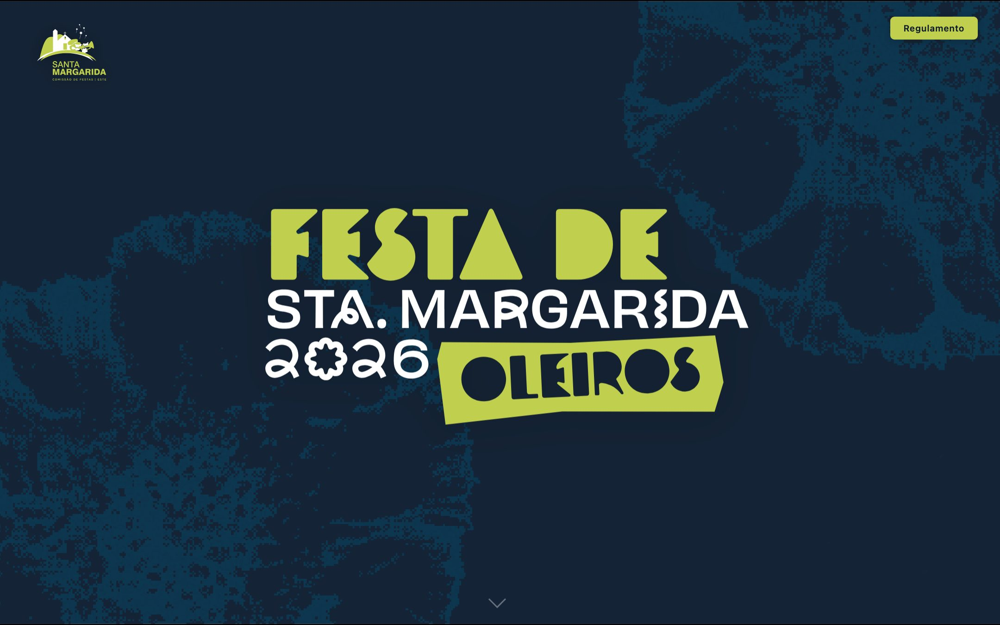

Saltar para o conteúdo
Development
Contactos
PT

005. FESTA SANTA MARGARIDA
Link para o site
(abre num novo separador)
Landing page da festa anual de Oleiros, com o programa e informações para quem visita.
← Jaf Madeiras
Sh-Solicitador →